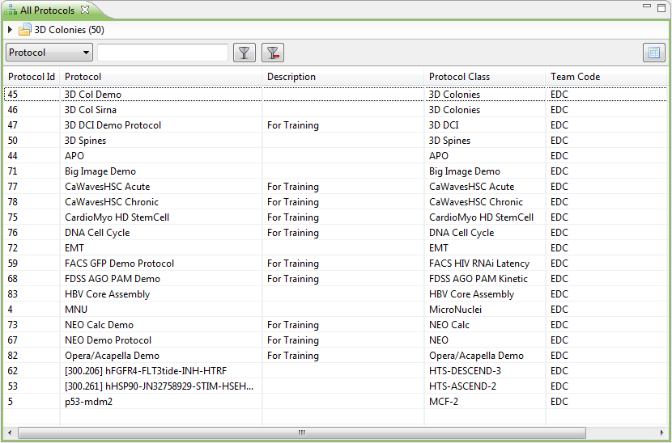
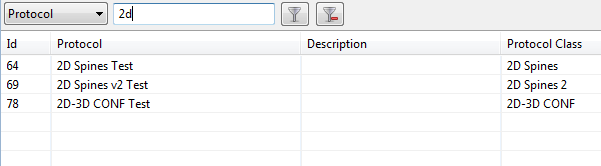
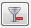

The Protocol Browser lists a set of protocols, and is an important tool for navigating to your data efficiently.
The exact list of shown protocols depend on how the Protocol Browser was opened: this is often done via the Navigator, by double-clicking on All Protocols or Team Protocols.

To navigate into a protocol and see the experiments available, double-click on a protocol. For more options, such as editing or deleting a protocol, right-click on the protocol.
On top of the table is a filter: you can enter a protocol name (or part of a protocol name) to limit the list of protocols to those matching the entered name.

You can filter on other fields as well, such as protocol class name, or team name. To do this, select another field in the filter dropdown.
To reset the filter, click the reset button: 